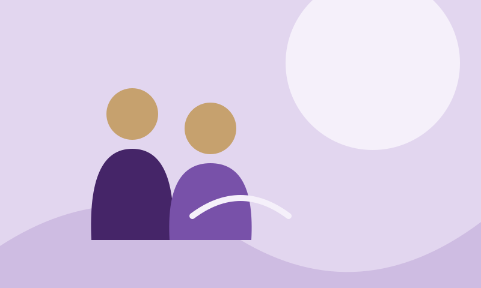
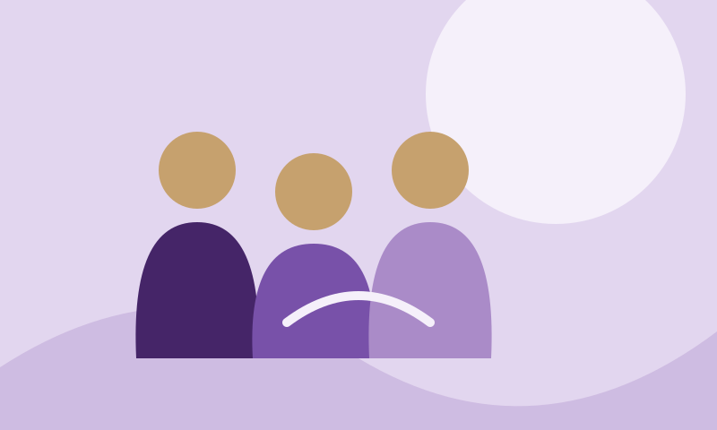
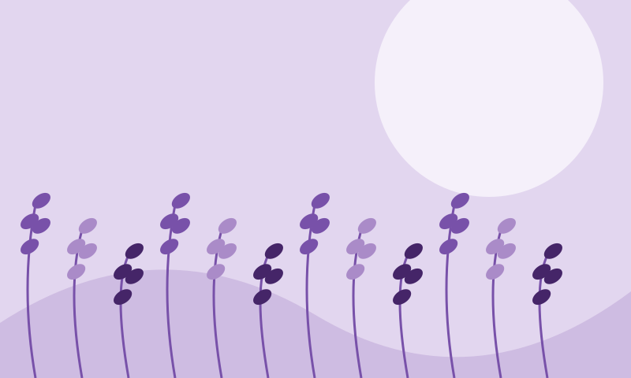

Jeg har kreft
Informasjon og støtte i hverdagen.
Planlagt områdeHÅP. OMSORG. FELLESSKAP.
ZAINAB er et initiativ under utvikling for mennesker berørt av kreft.
Finn støtte
Dette er en konseptprototype. Tjenestene er planlagte, ikke aktive helse- eller omsorgstjenester.
Informasjon og støtte i hverdagen.
Planlagt område
Ressurser for familie og nære.
Planlagt område
Alderstilpasset kunnskap og trygg støtte.
Planlagt område
Finn frem til relevante hjelpetilbud.
Planlagt område
Informasjon om offentlige tjenester.
Planlagt område
Livskvalitet og mestring.
Planlagt område
Tilrettelegging og veien tilbake.
Planlagt område
Kilder til helseinformasjon.
Planlagt område
Planlagt trygg møteplass.
Planlagt område
Planlagte kurs og ressurser.
Planlagt område
Planlagt frivilligprogram.
Planlagt område
Norsk, tyrkisk og engelsk er planlagt.
Planlagt område
Donasjoner er ikke aktivert.
Planlagt område
Et initiativ bygget på håp, omsorg og ønsket om å gjøre en forskjell.